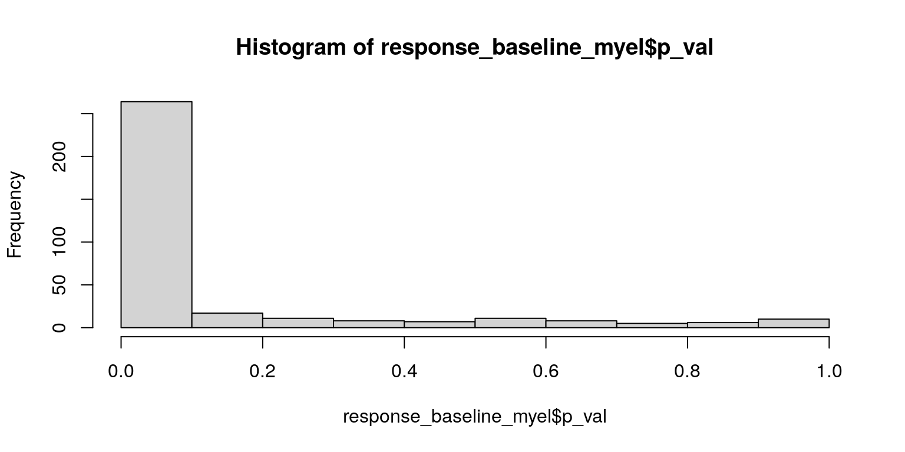
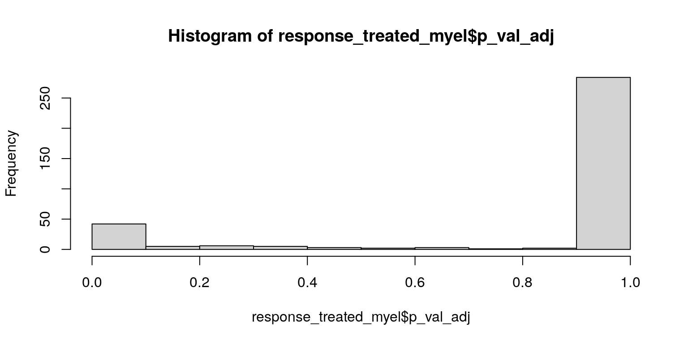

PIPAC Arm 3 differential expression analysis
heinin
2025-03-25
Last updated: 2025-04-07
Checks: 5 2
Knit directory: PIPAC_spatial/
This reproducible R Markdown analysis was created with workflowr (version 1.7.1). The Checks tab describes the reproducibility checks that were applied when the results were created. The Past versions tab lists the development history.
The R Markdown is untracked by Git. To know which version of the R
Markdown file created these results, you’ll want to first commit it to
the Git repo. If you’re still working on the analysis, you can ignore
this warning. When you’re finished, you can run
wflow_publish to commit the R Markdown file and build the
HTML.
Great job! The global environment was empty. Objects defined in the global environment can affect the analysis in your R Markdown file in unknown ways. For reproduciblity it’s best to always run the code in an empty environment.
The command set.seed(20240917) was run prior to running
the code in the R Markdown file. Setting a seed ensures that any results
that rely on randomness, e.g. subsampling or permutations, are
reproducible.
Great job! Recording the operating system, R version, and package versions is critical for reproducibility.
Nice! There were no cached chunks for this analysis, so you can be confident that you successfully produced the results during this run.
Using absolute paths to the files within your workflowr project makes it difficult for you and others to run your code on a different machine. Change the absolute path(s) below to the suggested relative path(s) to make your code more reproducible.
| absolute | relative |
|---|---|
| /home/hnatri/PIPAC_spatial/ | . |
| /home/hnatri/PIPAC_spatial/code/PIPAC_colors_themes.R | code/PIPAC_colors_themes.R |
| /home/hnatri/PIPAC_spatial/code/plot_functions.R | code/plot_functions.R |
Great! You are using Git for version control. Tracking code development and connecting the code version to the results is critical for reproducibility.
The results in this page were generated with repository version 281c5e5. See the Past versions tab to see a history of the changes made to the R Markdown and HTML files.
Note that you need to be careful to ensure that all relevant files for
the analysis have been committed to Git prior to generating the results
(you can use wflow_publish or
wflow_git_commit). workflowr only checks the R Markdown
file, but you know if there are other scripts or data files that it
depends on. Below is the status of the Git repository when the results
were generated:
Ignored files:
Ignored: .RData
Ignored: analysis/figure/
Ignored: celltype_markers.tsv
Ignored: immune_cluster_marker_annotations.tsv
Ignored: immune_cluster_marker_annotations_2ndpass.tsv
Ignored: main_cluster_marker_annotations.tsv
Ignored: nonimmune_cluster_marker_annotations.tsv
Ignored: nonimmune_cluster_marker_annotations_2ndpass.tsv
Untracked files:
Untracked: MR_PIPACTMA3-Rerun_highres.png
Untracked: Rplots.pdf
Untracked: analysis/arm2_comparative_analysis.Rmd
Untracked: analysis/arm3_DEGs.Rmd
Untracked: analysis/arm3_comparative_analysis.Rmd
Untracked: analysis/arm3_niche_comparison.Rmd
Untracked: analysis/feature_expression.Rmd
Untracked: analysis/niche_construction_n20.Rmd
Untracked: analysis/pca_variance_decomp.Rmd
Untracked: annotation_dimplot.pdf
Untracked: code/construct_niches.R
Untracked: code/construct_niches.Rout
Untracked: code/plot_metadata.R
Untracked: code/plot_save_pdf.R
Untracked: code/run_rscript.sh
Untracked: code/slurm.19006190.err
Untracked: code/slurm.19006190.out
Untracked: code/update_metadata.R
Untracked: code/vardecomp.R
Untracked: coh004.pdf
Untracked: demographics_grid.pdf
Untracked: output/outputFile-Meanplot.pdf
Untracked: output/outputFile-Variance.csv
Untracked: output/outputFile-VarianceExplained-Boxplot.pdf
Untracked: output/scrna-Meanplot.pdf
Untracked: output/scrna-Variance.csv
Untracked: output/scrna-VarianceExplained-Boxplot.pdf
Untracked: output/vardecomp.tsv
Untracked: tissue_celltypeprop_scatter.pdf
Unstaged changes:
Modified: analysis/add_metadata.Rmd
Modified: analysis/annotation_2nd_pass.Rmd
Modified: analysis/index.Rmd
Modified: analysis/niche_construction.Rmd
Modified: analysis/plot_by_group.Rmd
Modified: analysis/splitting_samples.Rmd
Modified: code/PIPAC_colors_themes.R
Note that any generated files, e.g. HTML, png, CSS, etc., are not included in this status report because it is ok for generated content to have uncommitted changes.
There are no past versions. Publish this analysis with
wflow_publish() to start tracking its development.
Load packages
suppressPackageStartupMessages({
library(workflowr)
library(Seurat)
library(SeuratObject)
library(SeuratDisk)
library(tidyverse)
library(tibble)
library(ggplot2)
library(ggpubr)
library(ggrepel)
library(googlesheets4)
library(workflowr)
library(patchwork)
library(ggpmisc)})Environment variables and helper functions
setwd("/home/hnatri/PIPAC_spatial/")
set.seed(9999)
options(scipen = 99999)
options(ggrepel.max.overlaps = Inf)
source("/home/hnatri/PIPAC_spatial/code/PIPAC_colors_themes.R")
source("/home/hnatri/PIPAC_spatial/code/plot_functions.R")
# Calling DEGs between two groups for each cell type
get_DEGs <- function(seuratdata, celltypes, groupvar, group1, group2){
#message(xx)
DEGlist <- lapply(celltypes, function(xx){
data_subset <- subset(seuratdata, subset = Annotation == xx)
Idents(data_subset) <- as.character(unlist(data_subset[[groupvar]]))
if (min(table(unlist(data_subset[[groupvar]])))<20){
return(NULL)
}
if (all((c(group1, group2) %in% unlist(data_subset[[groupvar]]) == c(T, T)))){
markers <- FindMarkers(data_subset,
ident.1 = group1,
ident.2 = group2,
assay = "RNA",
verbose = F)
markers$feature <- rownames(markers)
markers$celltype <- xx
return(markers)
} else {
return(NULL)
}
})
as.data.frame(do.call(rbind, DEGlist))
}Marker information
gs4_deauth()
metadata <- gs4_get("https://docs.google.com/spreadsheets/d/1sXXwOreLxjMSUoPt79c6jmaQpluWkaxA5P5HfDsed3I/edit?usp=sharing")
markers <- read_sheet(metadata, sheet = "Markers")
second_pass_nonimmune <- read_sheet(metadata, sheet = "Tumor 2nd pass")
second_pass_immune <- read_sheet(metadata, sheet = "Immune 2nd pass")
# Cell type markers by group
gs4_deauth()
markers_by_group <- gs4_get("https://docs.google.com/spreadsheets/d/1w0wrL-5KwNEWi_VpmriN7YmfwpBPlEYX0MKlwI2ZQu8/edit?usp=sharing")
markers_by_group <- read_sheet(markers_by_group, sheet = "Markers by group")Import and subset data
seurat_data <- readRDS("/tgen_labs/banovich/PIPAC/Seurat/PIPAC_NC50_NN20_PC20_Seurat_annotated_metadata_niches.rds")
DefaultAssay(seurat_data) <- "RNA"
seurat_data <- seurat_data %>%
NormalizeData() %>%
ScaleData()
seurat_arm3 <- subset(seurat_data, subset = Arm == "Arm3")
seurat_arm3 <- seurat_arm3 %>%
NormalizeData() %>%
ScaleData()DEGs by response, all tumors
response_DEGs <- get_DEGs(seuratdata = seurat_arm3,
celltypes = unique(seurat_arm3$Annotation),
groupvar = "BestResponse",
group1 = "SD",
group2 = "PR")
# Distribution of p-values and log2FC
hist(response_DEGs$p_val)hist(response_DEGs$p_val_adj)hist(response_DEGs$avg_log2FC)response_DEGs_sig <- response_DEGs %>%
filter(p_val_adj < 0.01,
abs(avg_log2FC) > 1.5)
table(response_DEGs_sig$celltype)
B1 Endo1 Endo2 Endo3 EpiTumor1 F1 F2 F3
12 11 3 1 43 2 4 4
F4 F5 L2 L3 L4 M1 M2 M4
2 1 23 5 9 3 5 4
M5 M6 M7 M9 Mast Meso Peri Plasma1
9 3 2 8 3 20 15 2
Plasma3
2 DEGs by response, baseline tumors
baseline_tumor <- subset(seurat_arm3, subset = Tissue == "Tumor" &
Timepoint == 0)
baseline_tumor <- baseline_tumor %>%
NormalizeData() %>%
ScaleData()
response_DEGs_baseline <- get_DEGs(seuratdata = baseline_tumor,
celltypes = unique(baseline_tumor$Annotation),
groupvar = "BestResponse",
group1 = "SD",
group2 = "PR")
# Distribution of p-values and log2FC
hist(response_DEGs_baseline$p_val)hist(response_DEGs_baseline$p_val_adj)hist(response_DEGs_baseline$avg_log2FC)response_DEGs_baseline_sig <- response_DEGs_baseline %>%
filter(p_val_adj < 0.01,
abs(avg_log2FC) > 1.5)
table(response_DEGs_baseline_sig$celltype)
Endo1 EpiTumor1 F1 F2 F3 F4 F5 L2
19 42 6 11 13 2 3 10
L3 L4 M1 M2 M4 M5 M6 M7
6 2 2 5 13 9 10 6
M9 Mast Meso Peri Plasma2 Plasma3
15 1 29 22 3 3 DEGs by response, post-treatment tumors
post_treatment_tumor <- subset(seurat_arm3, subset = Tissue == "Tumor" &
Timepoint %in% c(6, 12))
post_treatment_tumor <- post_treatment_tumor %>%
NormalizeData() %>%
ScaleData()
posttreatment_response_DEGs <- get_DEGs(seuratdata = post_treatment_tumor,
celltypes = unique(post_treatment_tumor$Annotation),
groupvar = "BestResponse",
group1 = "SD",
group2 = "PR")
# Distribution of p-values and log2FC
hist(posttreatment_response_DEGs$p_val)hist(posttreatment_response_DEGs$p_val_adj)hist(posttreatment_response_DEGs$avg_log2FC)posttreatment_response_DEGs_sig <- posttreatment_response_DEGs %>%
filter(p_val_adj < 0.01,
abs(avg_log2FC) > 1.5)
table(posttreatment_response_DEGs_sig$celltype)
Endo1 EpiTumor1 F1 F2 F3 F5 M1 M5
5 2 4 6 27 6 1 5
M9 Peri
5 1 Plotting
#plot_list <- lapply(unique(seurat_arm3$Annotation))DEGs for myeloid, lymphoid, and fibroblast subsets
Baseline tumors, myeloid
sort(unique(baseline_tumor$Annotation)) [1] "B1" "B2" "DC" "Endo1" "Endo2" "Endo3"
[7] "EpiTumor1" "EpiTumor2" "F1" "F2" "F3" "F4"
[13] "F5" "L1" "L2" "L3" "L4" "L5"
[19] "M1" "M2" "M4" "M5" "M6" "M7"
[25] "M8" "M9" "Mast" "Meso" "Peri" "Plasma1"
[31] "Plasma2" "Plasma3" Idents(baseline_tumor) <- baseline_tumor$BestResponse
myel_celltypes <- c("B1", "B2", "DC", "Mast", "Plasma1", "Plasma2", "Plasma3",
paste0("M", seq(1,9)))
baseline_myel <- subset(baseline_tumor, subset = Annotation %in% myel_celltypes)
baseline_myel <- baseline_myel %>%
NormalizeData() %>%
ScaleData()
response_baseline_myel <- FindMarkers(baseline_myel,
ident.1 = "SD",
ident.2 = "PR",
assay = "RNA",
verbose = F)
response_baseline_myel$feature <- rownames(response_baseline_myel)
# Distribution of p-values and log2FC
hist(response_baseline_myel$p_val)
hist(response_baseline_myel$p_val_adj)hist(response_baseline_myel$avg_log2FC)
response_baseline_myel_sig <- response_baseline_myel %>%
filter(p_val_adj < 0.01,
abs(avg_log2FC) > 1.5)
response_baseline_myel_sig$feature [1] "MARCO" "POSTN" "KLRK1" "JUN" "FOS" "CEACAM1" "IGLC3"
[8] "SDC1" "ANGPTL4" "CCL19" "KLRC1" "CXCL6" "CEACAM8" "DERL3" response_baseline_myel_sig %>%
dplyr::mutate(across(where(is.numeric), round, 3)) p_val avg_log2FC pct.1 pct.2 p_val_adj feature
MARCO 0 2.908 0.376 0.056 0.000 MARCO
POSTN 0 -2.580 0.049 0.255 0.000 POSTN
KLRK1 0 3.020 0.151 0.012 0.000 KLRK1
JUN 0 1.903 0.241 0.065 0.000 JUN
FOS 0 2.048 0.126 0.036 0.000 FOS
CEACAM1 0 1.623 0.066 0.013 0.000 CEACAM1
IGLC3 0 -2.364 0.005 0.021 0.000 IGLC3
SDC1 0 -1.565 0.014 0.035 0.000 SDC1
ANGPTL4 0 1.941 0.020 0.004 0.000 ANGPTL4
CCL19 0 2.275 0.023 0.006 0.000 CCL19
KLRC1 0 1.867 0.019 0.004 0.000 KLRC1
CXCL6 0 1.518 0.023 0.007 0.000 CXCL6
CEACAM8 0 1.613 0.029 0.011 0.001 CEACAM8
DERL3 0 -1.906 0.016 0.033 0.002 DERL3VlnPlot(subset(baseline_myel, subset = BestResponse %in% c("SD", "PR")),
group.by = "BestResponse",
features = response_baseline_myel_sig$feature,
layer = "data",
pt.size = 0,
ncol = 3) &
theme_classic() &
RotatedAxis()VlnPlot(subset(baseline_myel, subset = BestResponse %in% c("SD", "PR")),
group.by = "Annotation",
split.by = "BestResponse",
split.plot = T,
features = response_baseline_myel_sig$feature,
layer = "data",
pt.size = 0,
ncol = 3) &
theme_classic() &
RotatedAxis()Baseline tumors, lymphoid
lymph_celltypes <- paste0("L", seq(1,5))
baseline_lymph <- subset(baseline_tumor, subset = Annotation %in% lymph_celltypes)
baseline_lymph <- baseline_lymph %>%
NormalizeData() %>%
ScaleData()
response_baseline_lymph <- FindMarkers(baseline_lymph,
ident.1 = "SD",
ident.2 = "PR",
assay = "RNA",
verbose = F)
response_baseline_lymph$feature <- rownames(response_baseline_lymph)
# Distribution of p-values and log2FC
hist(response_baseline_lymph$p_val)hist(response_baseline_lymph$p_val_adj)hist(response_baseline_lymph$avg_log2FC)response_baseline_lymph_sig <- response_baseline_lymph %>%
filter(p_val_adj < 0.01,
abs(avg_log2FC) > 1.5)
response_baseline_lymph_sig$feature [1] "COL1A2" "POSTN" "LUM" "JUN" "CD248" "FOS" "JUNB" "IGHG2"
[9] "IGLC3" "CCL13" response_baseline_lymph_sig %>%
dplyr::mutate(across(where(is.numeric), round, 3)) p_val avg_log2FC pct.1 pct.2 p_val_adj feature
COL1A2 0 -1.825 0.301 0.785 0.000 COL1A2
POSTN 0 -4.766 0.020 0.368 0.000 POSTN
LUM 0 -1.571 0.200 0.488 0.000 LUM
JUN 0 3.172 0.221 0.040 0.000 JUN
CD248 0 -1.612 0.040 0.130 0.000 CD248
FOS 0 5.994 0.040 0.001 0.000 FOS
JUNB 0 2.930 0.057 0.010 0.000 JUNB
IGHG2 0 -3.329 0.004 0.032 0.002 IGHG2
IGLC3 0 -4.910 0.002 0.026 0.002 IGLC3
CCL13 0 -2.177 0.017 0.055 0.004 CCL13VlnPlot(subset(baseline_lymph, subset = BestResponse %in% c("SD", "PR")),
group.by = "BestResponse",
features = response_baseline_lymph_sig$feature,
layer = "data",
pt.size = 0,
ncol = 3) &
theme_classic() &
RotatedAxis()VlnPlot(subset(baseline_lymph, subset = BestResponse %in% c("SD", "PR")),
group.by = "Annotation",
split.by = "BestResponse",
split.plot = T,
features = response_baseline_lymph_sig$feature,
layer = "data",
pt.size = 0,
ncol = 3) &
theme_classic() &
RotatedAxis()Baseline tumors, fibroblast
fibro_celltypes <- paste0("F", seq(1,5))
baseline_fibro <- subset(baseline_tumor, subset = Annotation %in% fibro_celltypes)
baseline_fibro <- baseline_fibro %>%
NormalizeData() %>%
ScaleData()
response_baseline_fibro <- FindMarkers(baseline_fibro,
ident.1 = "SD",
ident.2 = "PR",
assay = "RNA",
verbose = F)
response_baseline_fibro$feature <- rownames(response_baseline_fibro)
# Distribution of p-values and log2FC
hist(response_baseline_fibro$p_val)hist(response_baseline_fibro$p_val_adj)hist(response_baseline_fibro$avg_log2FC)response_baseline_fibro_sig <- response_baseline_fibro %>%
filter(p_val_adj < 0.01,
abs(avg_log2FC) > 1.5)
response_baseline_fibro_sig$feature [1] "POSTN" "JUN" "ADM" "TC2N" "FOS" "ANGPTL4" "CA9"
[8] "SPP1" "MARCO" "OLFM4" "CXCL1" "CLEC12A" "CD36" "NTRK1"
[15] "CXCL6" "EPCAM" "ICOSLG" response_baseline_fibro_sig %>%
dplyr::mutate(across(where(is.numeric), round, 3)) p_val avg_log2FC pct.1 pct.2 p_val_adj feature
POSTN 0 -2.207 0.145 0.613 0.000 POSTN
JUN 0 1.766 0.266 0.115 0.000 JUN
ADM 0 2.972 0.102 0.022 0.000 ADM
TC2N 0 2.064 0.117 0.037 0.000 TC2N
FOS 0 3.347 0.060 0.007 0.000 FOS
ANGPTL4 0 2.063 0.066 0.021 0.000 ANGPTL4
CA9 0 3.370 0.026 0.004 0.000 CA9
SPP1 0 2.285 0.085 0.044 0.000 SPP1
MARCO 0 2.770 0.028 0.008 0.000 MARCO
OLFM4 0 3.539 0.027 0.009 0.000 OLFM4
CXCL1 0 2.726 0.019 0.006 0.000 CXCL1
CLEC12A 0 1.964 0.023 0.009 0.000 CLEC12A
CD36 0 1.627 0.051 0.030 0.000 CD36
NTRK1 0 1.790 0.017 0.007 0.000 NTRK1
CXCL6 0 1.761 0.021 0.010 0.000 CXCL6
EPCAM 0 2.344 0.019 0.010 0.002 EPCAM
ICOSLG 0 1.682 0.021 0.011 0.002 ICOSLGVlnPlot(subset(baseline_fibro, subset = BestResponse %in% c("SD", "PR")),
group.by = "BestResponse",
features = response_baseline_fibro_sig$feature,
layer = "data",
pt.size = 0,
ncol = 3) &
theme_classic() &
RotatedAxis()VlnPlot(subset(baseline_fibro, subset = BestResponse %in% c("SD", "PR")),
group.by = "Annotation",
split.by = "BestResponse",
split.plot = T,
features = response_baseline_fibro_sig$feature,
layer = "data",
pt.size = 0,
ncol = 3) &
theme_classic() &
RotatedAxis()Post-treatment tumors, myeloid
sort(unique(post_treatment_tumor$Annotation)) [1] "B1" "B2" "DC" "Endo1" "Endo2" "Endo3"
[7] "EpiTumor1" "F1" "F2" "F3" "F4" "F5"
[13] "L1" "L2" "L3" "L4" "L5" "M1"
[19] "M2" "M4" "M5" "M6" "M7" "M8"
[25] "M9" "Mast" "Meso" "Peri" "Plasma1" "Plasma2"
[31] "Plasma3" Idents(post_treatment_tumor) <- post_treatment_tumor$BestResponse
myel_celltypes <- c("B1", "B2", "DC", "Mast", "Plasma1", "Plasma2", "Plasma3",
paste0("M", seq(1,9)))
treated_myel <- subset(post_treatment_tumor, subset = Annotation %in% myel_celltypes)
treated_myel <- treated_myel %>%
NormalizeData() %>%
ScaleData()
response_treated_myel <- FindMarkers(treated_myel,
ident.1 = "SD",
ident.2 = "PR",
assay = "RNA",
verbose = F)
response_treated_myel$feature <- rownames(response_treated_myel)
# Distribution of p-values and log2FC
hist(response_treated_myel$p_val)
hist(response_treated_myel$p_val_adj)
hist(response_treated_myel$avg_log2FC)response_treated_myel_sig <- response_treated_myel %>%
filter(p_val_adj < 0.01,
abs(avg_log2FC) > 1.5)
response_treated_myel_sig$feature[1] "CX3CR1" "SLC1A3" "JUN" "APOE" "ANPEP" "ADM" "IL2RA" response_treated_myel_sig %>%
dplyr::mutate(across(where(is.numeric), round, 3)) p_val avg_log2FC pct.1 pct.2 p_val_adj feature
CX3CR1 0 -2.818 0.032 0.175 0 CX3CR1
SLC1A3 0 2.219 0.392 0.067 0 SLC1A3
JUN 0 2.978 0.324 0.054 0 JUN
APOE 0 1.683 0.174 0.059 0 APOE
ANPEP 0 2.051 0.103 0.018 0 ANPEP
ADM 0 3.729 0.088 0.010 0 ADM
IL2RA 0 1.505 0.131 0.041 0 IL2RAVlnPlot(subset(treated_myel, subset = BestResponse %in% c("SD", "PR")),
group.by = "BestResponse",
features = response_treated_myel_sig$feature,
layer = "data",
pt.size = 0,
ncol = 3) &
theme_classic() &
RotatedAxis()VlnPlot(subset(treated_myel, subset = BestResponse %in% c("SD", "PR")),
group.by = "Annotation",
split.by = "BestResponse",
split.plot = T,
features = response_treated_myel_sig$feature,
layer = "data",
pt.size = 0,
ncol = 3) &
theme_classic() &
RotatedAxis()Post-treatment tumors, lymphoid
lymph_celltypes <- paste0("L", seq(1,5))
treated_lymph <- subset(post_treatment_tumor, subset = Annotation %in% lymph_celltypes)
treated_lymph <- treated_lymph %>%
NormalizeData() %>%
ScaleData()
response_treated_lymph <- FindMarkers(treated_lymph,
ident.1 = "SD",
ident.2 = "PR",
assay = "RNA",
verbose = F)
response_treated_lymph$feature <- rownames(response_treated_lymph)
# Distribution of p-values and log2FC
hist(response_treated_lymph$p_val)hist(response_treated_lymph$p_val_adj)hist(response_treated_lymph$avg_log2FC)
response_treated_lymph_sig <- response_treated_lymph %>%
filter(p_val_adj < 0.01,
abs(avg_log2FC) > 1.5)
response_treated_lymph_sig$feature[1] "IGHG3" "DLL1" "CD86" "IRF8" "CDKN2B" "LGR5" "CTSE" "EPO" response_treated_lymph_sig %>%
dplyr::mutate(across(where(is.numeric), round, 3)) p_val avg_log2FC pct.1 pct.2 p_val_adj feature
IGHG3 0 -4.518 0.004 0.125 0.000 IGHG3
DLL1 0 -3.646 0.012 0.167 0.000 DLL1
CD86 0 -2.972 0.022 0.208 0.000 CD86
IRF8 0 -2.523 0.052 0.292 0.000 IRF8
CDKN2B 0 -2.633 0.013 0.125 0.003 CDKN2B
LGR5 0 -4.416 0.001 0.042 0.003 LGR5
CTSE 0 -3.871 0.001 0.042 0.003 CTSE
EPO 0 -4.604 0.001 0.042 0.003 EPOVlnPlot(subset(treated_lymph, subset = BestResponse %in% c("SD", "PR")),
group.by = "BestResponse",
features = response_treated_lymph_sig$feature,
layer = "data",
pt.size = 0,
ncol = 3) &
theme_classic() &
RotatedAxis()VlnPlot(subset(treated_lymph, subset = BestResponse %in% c("SD", "PR")),
group.by = "Annotation",
split.by = "BestResponse",
split.plot = T,
features = response_treated_lymph_sig$feature,
layer = "data",
pt.size = 0,
ncol = 3) &
theme_classic() &
RotatedAxis()Post-treatment tumors, fibroblast
fibro_celltypes <- paste0("F", seq(1,5))
treated_fibro <- subset(post_treatment_tumor, subset = Annotation %in% fibro_celltypes)
treated_fibro <- treated_fibro %>%
NormalizeData() %>%
ScaleData()
response_treated_fibro <- FindMarkers(treated_fibro,
ident.1 = "SD",
ident.2 = "PR",
assay = "RNA",
verbose = F)
response_treated_fibro$feature <- rownames(response_treated_fibro)
# Distribution of p-values and log2FC
hist(response_treated_fibro$p_val)hist(response_treated_fibro$p_val_adj)hist(response_treated_fibro$avg_log2FC)response_treated_fibro_sig <- response_treated_fibro %>%
filter(p_val_adj < 0.01,
abs(avg_log2FC) > 1.5)
response_treated_fibro_sig$feature [1] "JUN" "TGFBI" "FOS" "SPP1" "JUNB" "TC2N" "CHL1" "CD36"
[9] "EGR3" "AIF1" "S100A9" "MSLN" "ISG15" "SOCS1" response_treated_fibro_sig %>%
dplyr::mutate(across(where(is.numeric), round, 3)) p_val avg_log2FC pct.1 pct.2 p_val_adj feature
JUN 0 2.510 0.381 0.069 0.000 JUN
TGFBI 0 1.957 0.229 0.056 0.000 TGFBI
FOS 0 3.548 0.090 0.005 0.000 FOS
SPP1 0 3.202 0.080 0.011 0.000 SPP1
JUNB 0 2.472 0.084 0.014 0.000 JUNB
TC2N 0 1.644 0.071 0.014 0.000 TC2N
CHL1 0 1.624 0.063 0.015 0.000 CHL1
CD36 0 1.991 0.057 0.013 0.000 CD36
EGR3 0 1.609 0.074 0.025 0.000 EGR3
AIF1 0 1.582 0.034 0.008 0.000 AIF1
S100A9 0 1.738 0.035 0.009 0.000 S100A9
MSLN 0 -1.819 0.008 0.025 0.000 MSLN
ISG15 0 1.900 0.036 0.012 0.000 ISG15
SOCS1 0 1.637 0.013 0.002 0.002 SOCS1VlnPlot(subset(treated_fibro, subset = BestResponse %in% c("SD", "PR")),
group.by = "BestResponse",
features = response_treated_fibro_sig$feature,
layer = "data",
pt.size = 0,
ncol = 3) &
theme_classic() &
RotatedAxis()VlnPlot(subset(treated_fibro, subset = BestResponse %in% c("SD", "PR")),
group.by = "Annotation",
split.by = "BestResponse",
split.plot = T,
features = response_treated_fibro_sig$feature,
layer = "data",
pt.size = 0,
ncol = 3) &
theme_classic() &
RotatedAxis()
sessionInfo()R version 4.3.0 (2023-04-21)
Platform: x86_64-pc-linux-gnu (64-bit)
Running under: Ubuntu 22.04.3 LTS
Matrix products: default
BLAS: /usr/lib/x86_64-linux-gnu/openblas-pthread/libblas.so.3
LAPACK: /usr/lib/x86_64-linux-gnu/openblas-pthread/libopenblasp-r0.3.20.so; LAPACK version 3.10.0
locale:
[1] LC_CTYPE=en_US.UTF-8 LC_NUMERIC=C
[3] LC_TIME=en_US.UTF-8 LC_COLLATE=en_US.UTF-8
[5] LC_MONETARY=en_US.UTF-8 LC_MESSAGES=en_US.UTF-8
[7] LC_PAPER=en_US.UTF-8 LC_NAME=C
[9] LC_ADDRESS=C LC_TELEPHONE=C
[11] LC_MEASUREMENT=en_US.UTF-8 LC_IDENTIFICATION=C
time zone: Etc/UTC
tzcode source: system (glibc)
attached base packages:
[1] grid stats graphics grDevices utils datasets methods
[8] base
other attached packages:
[1] ComplexHeatmap_2.18.0 viridis_0.6.3 viridisLite_0.4.2
[4] circlize_0.4.15 plyr_1.8.8 RColorBrewer_1.1-3
[7] ggpmisc_0.5.2 ggpp_0.5.2 patchwork_1.1.2
[10] googlesheets4_1.1.0 ggrepel_0.9.3 ggpubr_0.6.0
[13] lubridate_1.9.2 forcats_1.0.0 stringr_1.5.0
[16] dplyr_1.1.2 purrr_1.0.2 readr_2.1.4
[19] tidyr_1.3.0 tibble_3.2.1 ggplot2_3.4.2
[22] tidyverse_2.0.0 SeuratDisk_0.0.0.9021 Seurat_5.0.1
[25] SeuratObject_5.0.2 sp_1.6-1 workflowr_1.7.1
loaded via a namespace (and not attached):
[1] RcppAnnoy_0.0.20 splines_4.3.0 later_1.3.1
[4] cellranger_1.1.0 polyclip_1.10-4 fastDummies_1.7.3
[7] lifecycle_1.0.3 rstatix_0.7.2 doParallel_1.0.17
[10] rprojroot_2.0.3 globals_0.16.2 processx_3.8.1
[13] lattice_0.21-8 hdf5r_1.3.8 MASS_7.3-60
[16] backports_1.4.1 magrittr_2.0.3 limma_3.58.1
[19] plotly_4.10.2 sass_0.4.6 rmarkdown_2.22
[22] jquerylib_0.1.4 yaml_2.3.7 httpuv_1.6.11
[25] sctransform_0.4.1 spam_2.9-1 spatstat.sparse_3.0-1
[28] reticulate_1.29 cowplot_1.1.1 pbapply_1.7-0
[31] abind_1.4-5 Rtsne_0.16 presto_1.0.0
[34] BiocGenerics_0.48.1 git2r_0.32.0 S4Vectors_0.40.2
[37] IRanges_2.36.0 irlba_2.3.5.1 listenv_0.9.0
[40] spatstat.utils_3.0-3 MatrixModels_0.5-1 goftest_1.2-3
[43] RSpectra_0.16-1 spatstat.random_3.1-5 fitdistrplus_1.1-11
[46] parallelly_1.36.0 leiden_0.4.3 codetools_0.2-19
[49] shape_1.4.6 tidyselect_1.2.0 farver_2.1.1
[52] stats4_4.3.0 matrixStats_1.0.0 spatstat.explore_3.2-1
[55] googledrive_2.1.0 jsonlite_1.8.5 GetoptLong_1.0.5
[58] ellipsis_0.3.2 progressr_0.13.0 iterators_1.0.14
[61] ggridges_0.5.4 survival_3.5-5 foreach_1.5.2
[64] tools_4.3.0 ica_1.0-3 Rcpp_1.0.10
[67] glue_1.6.2 gridExtra_2.3 xfun_0.39
[70] withr_2.5.0 fastmap_1.1.1 fansi_1.0.4
[73] SparseM_1.81 callr_3.7.3 digest_0.6.31
[76] timechange_0.2.0 R6_2.5.1 mime_0.12
[79] colorspace_2.1-0 scattermore_1.2 tensor_1.5
[82] spatstat.data_3.0-1 utf8_1.2.3 generics_0.1.3
[85] data.table_1.14.8 httr_1.4.6 htmlwidgets_1.6.2
[88] whisker_0.4.1 uwot_0.1.14 pkgconfig_2.0.3
[91] gtable_0.3.3 lmtest_0.9-40 htmltools_0.5.5
[94] carData_3.0-5 dotCall64_1.0-2 clue_0.3-64
[97] scales_1.2.1 png_0.1-8 knitr_1.43
[100] rstudioapi_0.14 rjson_0.2.21 tzdb_0.4.0
[103] reshape2_1.4.4 curl_5.0.1 nlme_3.1-162
[106] GlobalOptions_0.1.2 cachem_1.0.8 zoo_1.8-12
[109] KernSmooth_2.23-21 vipor_0.4.5 parallel_4.3.0
[112] miniUI_0.1.1.1 ggrastr_1.0.2 pillar_1.9.0
[115] vctrs_0.6.5 RANN_2.6.1 promises_1.2.0.1
[118] car_3.1-2 xtable_1.8-4 cluster_2.1.4
[121] beeswarm_0.4.0 evaluate_0.21 cli_3.6.1
[124] compiler_4.3.0 rlang_1.1.1 crayon_1.5.2
[127] future.apply_1.11.0 ggsignif_0.6.4 labeling_0.4.2
[130] ps_1.7.5 ggbeeswarm_0.7.2 getPass_0.2-4
[133] fs_1.6.2 stringi_1.7.12 deldir_1.0-9
[136] munsell_0.5.0 lazyeval_0.2.2 spatstat.geom_3.2-1
[139] quantreg_5.95 Matrix_1.6-5 RcppHNSW_0.5.0
[142] hms_1.1.3 bit64_4.0.5 future_1.32.0
[145] statmod_1.5.0 shiny_1.7.4 highr_0.10
[148] ROCR_1.0-11 gargle_1.4.0 igraph_1.4.3
[151] broom_1.0.4 bslib_0.4.2 bit_4.0.5
[154] polynom_1.4-1